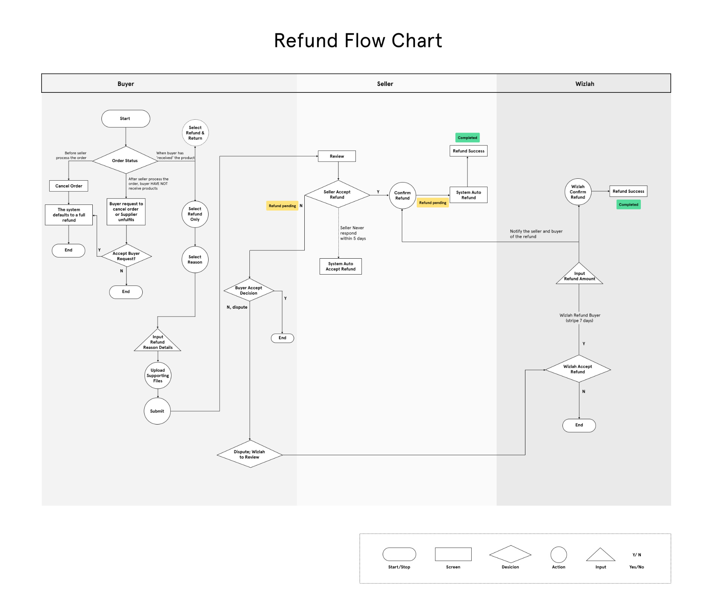
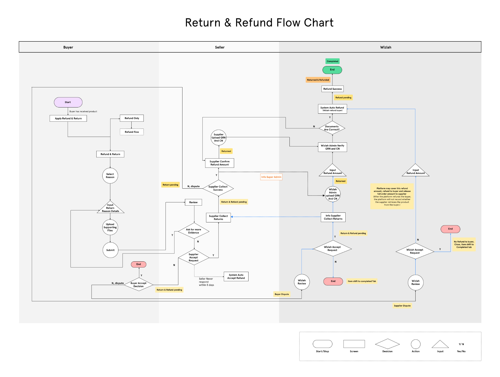

Wizlah Return & Refund
Wizlah simplifies the renovation process by offering a comprehensive solution for all homeowners' interior design needs. Design their new home, shop for furniture, and connect with an interior designer, all through Wizlah integrated platform.
About Project
Study overview
This case study details the development of a new return and refund process for an interior design e-commerce platform, aimed at simplifying the user experience and increasing customer satisfaction.
Problem Statement
Users found the existing process to be cumbersome, leading to high customer service call volumes and dissatisfaction.
Solution
A streamlined, user-friendly return and refund interface that reduces complexity and encourages self-service.
Design Process
Employed a human-centered design approach to ensure that the solution directly addresses user needs and pain points.
Design Thinking Process

User Research
Qualitative Research
When conducting qualitative research specifically focusing on return and refund processes, Our goal is to understand the user experience, identify pain points, and gather insights that can inform improvements. Here are some effective questions we ask during interviews or focus groups:
- How often do you return items purchased online?
- What is your primary reason for returning a product?
- How important is the clarity of the return policy when deciding to purchase from an e-commerce site?
- What is the ideal number of steps for completing a return process?
- How satisfied are you with the current return and refund processes on furniture e-commerce platforms?
- What is the acceptable maximum time you are willing to wait for a refund after returning an item?
- How likely are you to continue shopping with an e-commerce platform based on their return and refund process?
- How important is it for you to receive real-time updates on the status of your return?
- What method do you prefer for initiating a return?
- How often do you find the return instructions provided by e-commerce platforms clear and easy to follow?
Interview insights
Based on quantitative research, frequent returns highlight the need for a streamlined process. Common reasons for returns, such as inaccurate product descriptions and defects, indicate areas for improvement. Users demand clear, accessible return policies and prefer a simple, efficient return process with quick refunds. Real-time status updates and multiple initiation methods are crucial. Clear instructions are essential to avoid frustration. Implementing these insights will create a user-friendly return and refund flow, enhancing user satisfaction and retention.
Competitive analysis
Reviewed some leading competitors to benchmark best practices and identify gaps.
Define
User persona is a fictional profile of a target user group, including details like age, habits, goals, and challenges. It helps designers and developers understand and empathize with users, guiding us to create products or services that meet users' needs effectively. This approach ensures the development process is user-focused.
User persona
Empathy mapping
Ideate
Scenario
Crafted scenarios where users might initiate returns, including receiving damaged goods or items differing from online descriptions, to cover a range of real-world applications.
User journey map
Detailed maps illustrated each step of the user’s journey from decision-making to final resolution, highlighting emotional highs and lows.
User flow
Developed a simplified flow with fewer steps and clearer options, designed to efficiently guide users through the return process.


Card Sorting
We give participants cards with features and asked to categorize them. By analyzing patterns in how users group the cards, we can create more intuitive navigation or menus that match users' mental models, ensuring better usability.
Card sorting with actual users to define and organize the reasons for returns into intuitive categories, making the selection process straightforward.
Information Architecture
To organize and structure information within a system, making it easy for users to find, understand, and navigate content. It focuses on creating a clear hierarchy and relationships between different pieces of information, enhancing usability and improving the overall user experience.
Design
High Fidelity wireframes
After conducting thorough research and brainstorming, I began by sketching low-fidelity wireframes on paper. I then transitioned to designing high-fidelity wireframes using Figma, allowing me to refine the app's look and functionality. During this process, I discovered and implemented necessary in-between screens to ensure a comprehensive design.
TEST
Usability testing
During the usability testing phase, we observed how users interacted with the newly designed return and refund flow. Test participants were asked to complete various tasks, such as initiating a return, filling out the return form, and tracking the refund status. We paid close attention to their ease of navigation, comprehension of instructions, and overall satisfaction with the process. Initially, we combined the return and refund options into a single action for all items at the order level, requiring users to choose between a return or refund after clicking the CTA button. This design aimed to simplify the process but ultimately proved confusing and cumbersome for users.
Findings
The usability tests revealed several key insights. Users appreciated the streamlined process and the clear, step-by-step instructions provided throughout the flow. However, the initial design, which combined return and refund actions at the order level, was found to be confusing and more troublesome for users. Based on this feedback, we revised the design to include separate return and refund CTAs for each item, significantly improving user clarity and ease of use. Additionally, users highly valued real-time updates and status notifications, reinforcing the importance of keeping them informed at every stage. Some users also encountered difficulties with navigation, suggesting a need for more intuitive navigation and clearer labeling.
These findings will guide our next iteration of improvements to enhance the overall user experience, ensuring a more intuitive, transparent, and efficient return and refund process. We improved the design accordingly, addressing user feedback to create a more user-friendly interface.